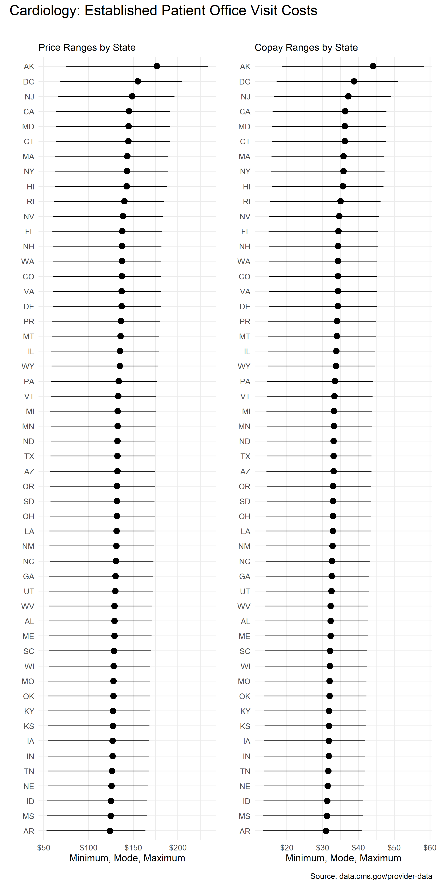
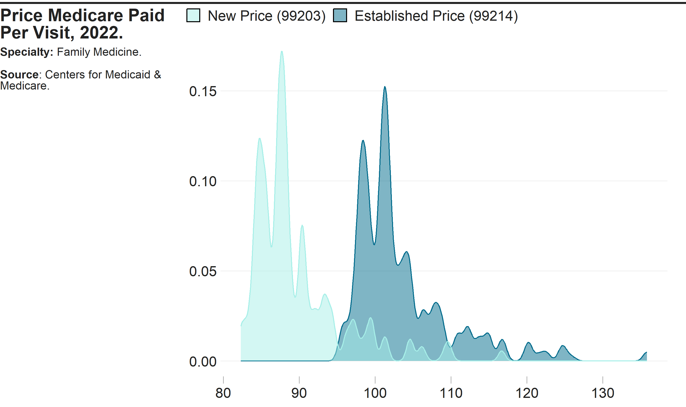

Installation
You can install the development version of costoffice from GitHub with:
# install.packages("devtools")
devtools::install_github("andrewallenbruce/costoffice")
# install.packages("remotes")
remotes::install_github("andrewallenbruce/costoffice")Purpose
The costoffice package contains functions enabling the user to access the latest Physician Office Visit Costs datasets from Data.CMS.gov.
There are 83 datasets in total, the name corresponding to a medical specialty(primary taxonomy). Each one contains:
- the most utilized procedure code (HCPCS Level II aka CPT code)
- the minimum, maximum, and mode price Medicare paid for the code and
- the minimum, maximum, and mode copay the patient paid for the visit
per zip code, for new and established patients both.
search_datasets()
Call this function to return dataset information and the url to download a csv file of the data.
Use the specialty argument to return only exact matches:
search_datasets(specialty = "cardiac surgery")#> # A tidytable: 1 × 6
#> specialty title issued modified released csv_url
#> <chr> <chr> <date> <date> <date> <chr>
#> 1 cardiac surgery Cardiac Surgery Offi… 2022-07-11 2022-07-11 2022-07-14 https:…Return a vector of the exact names of the medical specialties by simply calling
search_datasets()$specialty.
Use the keyword argument to return partial matches:
search_datasets(keyword = "medicine")#> # A tidytable: 12 × 6
#> specialty title issued modified released csv_url
#> <chr> <chr> <date> <date> <date> <chr>
#> 1 addiction medicine Addi… 2022-07-11 2022-07-11 2022-07-14 https:…
#> 2 emergency medicine Emer… 2022-07-11 2022-07-11 2022-07-14 https:…
#> 3 geriatric medicine Geri… 2022-07-11 2022-07-11 2022-07-14 https:…
#> 4 internal medicine Inte… 2022-07-11 2022-07-11 2022-07-14 https:…
#> 5 nuclear medicine Nucl… 2022-07-11 2022-07-11 2022-07-14 https:…
#> 6 osteopathic manipulative medi… Oste… 2022-07-11 2022-07-11 2022-07-14 https:…
#> 7 pediatric medicine Pedi… 2022-07-11 2022-07-11 2022-07-14 https:…
#> 8 physical medicine and rehabil… Phys… 2022-07-11 2022-07-11 2022-07-14 https:…
#> 9 preventive medicine Prev… 2022-07-11 2022-07-11 2022-07-14 https:…
#> 10 sleep medicine Slee… 2022-07-11 2022-07-11 2022-07-14 https:…
#> 11 sports medicine Spor… 2022-07-11 2022-07-11 2022-07-14 https:…
#> 12 undersea and hyperbaric medic… Unde… 2022-07-11 2022-07-11 2022-07-14 https:…Calling the function with no arguments will return the entire dataset:
#> # A tidytable: 83 × 6
#> specialty title issued modified released csv_url
#> <chr> <chr> <date> <date> <date> <chr>
#> 1 addiction medicine Addi… 2022-07-11 2022-07-11 2022-07-14 https:…
#> 2 advanced heart failure and tr… Adva… 2022-07-11 2022-07-11 2022-07-14 https:…
#> 3 allergy/ immunology Alle… 2022-07-11 2022-07-11 2022-07-14 https:…
#> 4 anesthesiology Anes… 2022-07-11 2022-07-11 2022-07-14 https:…
#> 5 cardiac surgery Card… 2022-07-11 2022-07-11 2022-07-14 https:…
#> 6 cardiology Card… 2022-07-11 2022-07-11 2022-07-14 https:…
#> 7 certified clinical nurse spec… Cert… 2022-07-11 2022-07-11 2022-07-14 https:…
#> 8 certified nurse midwife Cert… 2022-07-11 2022-07-11 2022-07-14 https:…
#> 9 certified registered nurse an… Cert… 2022-07-11 2022-07-11 2022-07-14 https:…
#> 10 clinic or group practice Clin… 2022-07-11 2022-07-11 2022-07-14 https:…
#> # ℹ 73 more rows
download_dataset()
Once you’ve found the dataset that you’re interested in, simply insert the download_dataset() function into your pipeline to retrieve the csv:
search_datasets(specialty = "vascular surgery") |>
download_dataset() |>
head()#> # A tidytable: 6 × 16
#> specialty zip_code new_code new_price_min new_price_max new_price_mode
#> <chr> <chr> <chr> <dbl> <dbl> <dbl>
#> 1 vascular surgery 00210 99203 60.1 182. 92.3
#> 2 vascular surgery 00211 99203 60.1 182. 92.3
#> 3 vascular surgery 00212 99203 60.1 182. 92.3
#> 4 vascular surgery 00213 99203 60.1 182. 92.3
#> 5 vascular surgery 00214 99203 60.1 182. 92.3
#> 6 vascular surgery 00215 99203 60.1 182. 92.3
#> # ℹ 10 more variables: new_copay_min <dbl>, new_copay_max <dbl>,
#> # new_copay_mode <dbl>, est_code <chr>, est_price_min <dbl>,
#> # est_price_max <dbl>, est_price_mode <dbl>, est_copay_min <dbl>,
#> # est_copay_max <dbl>, est_copay_mode <dbl>
use_zipcoder()
search_datasets(specialty = "vascular surgery") |>
download_dataset() |>
tidytable::slice_sample(n = 10) |>
use_zipcoder()#> # A tidytable: 10 × 28
#> city county state zip_code specialty new_code new_price_min new_price_max
#> <chr> <chr> <chr> <chr> <chr> <chr> <dbl> <dbl>
#> 1 Fort La… Browa… FL 33329 vascular… 99203 61.4 187.
#> 2 La Honda San M… CA 94020 vascular… 99203 69.9 206.
#> 3 New York New Y… NY 10179 vascular… 99203 69.5 209.
#> 4 Sherwood Frank… TN 37376 vascular… 99203 54.6 167.
#> 5 Jones M… Westm… PA 15646 vascular… 99203 57.0 174.
#> 6 Yale Guthr… IA 50277 vascular… 99203 54.9 168.
#> 7 Baptist… Hunte… NJ 08803 vascular… 99203 66.5 198.
#> 8 Hampton… Rocki… NH 03844 vascular… 99203 60.1 182.
#> 9 Black C… Outag… WI 54106 vascular… 99203 55.6 169.
#> 10 Fort Be… Chatt… GA 31905 vascular… 99203 55.2 170.
#> # ℹ 20 more variables: new_price_mode <dbl>, new_copay_min <dbl>,
#> # new_copay_max <dbl>, new_copay_mode <dbl>, est_code <chr>,
#> # est_price_min <dbl>, est_price_max <dbl>, est_price_mode <dbl>,
#> # est_copay_min <dbl>, est_copay_max <dbl>, est_copay_mode <dbl>, lat <dbl>,
#> # lng <dbl>, bounds_west <dbl>, bounds_east <dbl>, bounds_north <dbl>,
#> # bounds_south <dbl>, demographics <list>, is_zcta <lgl>,
#> # zcta_crosswalk <list>
download_datasets()
download_datasets(keyword = "medicine")#> # A tidytable: 397,248 × 28
#> specialty city county state zip_code new_code new_price_min new_price_max
#> <chr> <chr> <chr> <chr> <chr> <chr> <dbl> <dbl>
#> 1 Addiction_M… Agua… Aguad… PR 00602 99204 59.4 180.
#> 2 Addiction_M… Agua… Aguad… PR 00603 99204 59.4 180.
#> 3 Addiction_M… Mari… Maric… PR 00606 99204 59.4 180.
#> 4 Addiction_M… Anas… Aasco… PR 00610 99204 59.4 180.
#> 5 Addiction_M… Arec… Areci… PR 00612 99204 59.4 180.
#> 6 Addiction_M… Baja… Areci… PR 00616 99204 59.4 180.
#> 7 Addiction_M… Barc… Barce… PR 00617 99204 59.4 180.
#> 8 Addiction_M… Boqu… Cabo … PR 00622 99204 59.4 180.
#> 9 Addiction_M… Cabo… Cabo … PR 00623 99204 59.4 180.
#> 10 Addiction_M… Camuy Camuy… PR 00627 99204 59.4 180.
#> # ℹ 397,238 more rows
#> # ℹ 20 more variables: new_price_mode <dbl>, new_copay_min <dbl>,
#> # new_copay_max <dbl>, new_copay_mode <dbl>, est_code <chr>,
#> # est_price_min <dbl>, est_price_max <dbl>, est_price_mode <dbl>,
#> # est_copay_min <dbl>, est_copay_max <dbl>, est_copay_mode <dbl>, lat <dbl>,
#> # lng <dbl>, bounds_west <dbl>, bounds_east <dbl>, bounds_north <dbl>,
#> # bounds_south <dbl>, demographics <list>, is_zcta <lgl>, …Summary Statistics by State
Current average prices by state for a New Patient office visit to a Vascular Surgeon:
search_datasets(specialty = "vascular surgery") |>
download_dataset() |>
use_zipcoder() |>
tidytable::select(specialty,
state,
tidytable::starts_with("new_")) |>
tidytable::summarise(avg_price_mode = round(mean(new_price_mode), 2),
avg_copay_mode = round(mean(new_copay_mode), 2),
.by = c(specialty,
state,
new_code)) |>
tidytable::drop_na() |>
knitr::kable()| specialty | state | new_code | avg_price_mode | avg_copay_mode |
|---|---|---|---|---|
| vascular surgery | AK | 99203 | 116.69 | 29.17 |
| vascular surgery | AL | 99203 | 85.95 | 21.49 |
| vascular surgery | AR | 99203 | 82.31 | 20.58 |
| vascular surgery | AZ | 99203 | 88.34 | 22.08 |
| vascular surgery | CA | 99203 | 97.69 | 24.42 |
| vascular surgery | CO | 99203 | 92.05 | 23.01 |
| vascular surgery | CT | 99203 | 97.18 | 24.30 |
| vascular surgery | DC | 99203 | 104.59 | 26.15 |
| vascular surgery | DE | 99203 | 91.85 | 22.96 |
| vascular surgery | FL | 99203 | 91.92 | 22.98 |
| vascular surgery | GA | 99203 | 86.83 | 21.71 |
| vascular surgery | HI | 99203 | 96.11 | 24.03 |
| vascular surgery | IA | 99203 | 84.67 | 21.17 |
| vascular surgery | ID | 99203 | 83.37 | 20.84 |
| vascular surgery | IL | 99203 | 90.37 | 22.59 |
| vascular surgery | IN | 99203 | 84.54 | 21.14 |
| vascular surgery | KS | 99203 | 84.86 | 21.21 |
| vascular surgery | KY | 99203 | 84.75 | 21.19 |
| vascular surgery | LA | 99203 | 87.37 | 21.84 |
| vascular surgery | MA | 99203 | 96.24 | 24.06 |
| vascular surgery | MD | 99203 | 97.23 | 24.31 |
| vascular surgery | ME | 99203 | 86.06 | 21.51 |
| vascular surgery | MI | 99203 | 88.46 | 22.12 |
| vascular surgery | MN | 99203 | 88.84 | 22.21 |
| vascular surgery | MO | 99203 | 85.12 | 21.28 |
| vascular surgery | MS | 99203 | 82.96 | 20.74 |
| vascular surgery | MT | 99203 | 90.90 | 22.73 |
| vascular surgery | NC | 99203 | 87.21 | 21.80 |
| vascular surgery | ND | 99203 | 88.62 | 22.15 |
| vascular surgery | NE | 99203 | 83.92 | 20.98 |
| vascular surgery | NH | 99203 | 92.26 | 23.06 |
| vascular surgery | NJ | 99203 | 100.13 | 25.03 |
| vascular surgery | NM | 99203 | 87.31 | 21.83 |
| vascular surgery | NV | 99203 | 92.70 | 23.17 |
| vascular surgery | NY | 99203 | 96.01 | 24.00 |
| vascular surgery | OH | 99203 | 87.73 | 21.93 |
| vascular surgery | OK | 99203 | 85.07 | 21.27 |
| vascular surgery | OR | 99203 | 88.22 | 22.06 |
| vascular surgery | PA | 99203 | 89.32 | 22.33 |
| vascular surgery | PR | 99203 | 91.28 | 22.82 |
| vascular surgery | RI | 99203 | 93.88 | 23.47 |
| vascular surgery | SC | 99203 | 85.63 | 21.41 |
| vascular surgery | SD | 99203 | 88.26 | 22.07 |
| vascular surgery | TN | 99203 | 84.32 | 21.08 |
| vascular surgery | TX | 99203 | 88.43 | 22.11 |
| vascular surgery | UT | 99203 | 86.74 | 21.69 |
| vascular surgery | VA | 99203 | 91.87 | 22.97 |
| vascular surgery | VT | 99203 | 89.24 | 22.31 |
| vascular surgery | WA | 99203 | 92.12 | 23.03 |
| vascular surgery | WI | 99203 | 85.61 | 21.40 |
| vascular surgery | WV | 99203 | 85.85 | 21.46 |
| vascular surgery | WY | 99203 | 90.34 | 22.58 |
Current average prices by state for an Established Patient office visit to a Cardiologist:
est_cardio <- search_datasets(specialty = "cardiology") |>
download_dataset() |>
use_zipcoder() |>
tidytable::select(specialty,
state,
tidytable::starts_with("est_")) |>
tidytable::summarise(
avg_price_min = round(mean(est_price_min), 2),
avg_price_mode = round(mean(est_price_mode), 2),
avg_price_max = round(mean(est_price_max), 2),
avg_copay_min = round(mean(est_copay_min), 2),
avg_copay_mode = round(mean(est_copay_mode), 2),
avg_copay_max = round(mean(est_copay_min), 2),
.by = c(specialty,
state,
est_code)) |>
tidytable::drop_na()
est_cardio |> knitr::kable()| specialty | state | est_code | avg_price_min | avg_price_mode | avg_price_max | avg_copay_min | avg_copay_mode | avg_copay_max |
|---|---|---|---|---|---|---|---|---|
| cardiology | AK | 99214 | 22.38 | 135.85 | 190.74 | 5.59 | 33.96 | 5.59 |
| cardiology | AL | 99214 | 16.94 | 99.34 | 139.09 | 4.23 | 24.83 | 4.23 |
| cardiology | AR | 99214 | 16.26 | 95.61 | 133.85 | 4.07 | 23.90 | 4.07 |
| cardiology | AZ | 99214 | 17.74 | 102.07 | 142.65 | 4.44 | 25.52 | 4.44 |
| cardiology | CA | 99214 | 20.49 | 112.92 | 157.12 | 5.12 | 28.23 | 5.12 |
| cardiology | CO | 99214 | 18.98 | 106.33 | 148.20 | 4.75 | 26.58 | 4.75 |
| cardiology | CT | 99214 | 20.09 | 112.10 | 156.18 | 5.02 | 28.02 | 5.02 |
| cardiology | DC | 99214 | 21.87 | 120.20 | 167.25 | 5.47 | 30.05 | 5.47 |
| cardiology | DE | 99214 | 18.72 | 105.98 | 147.89 | 4.68 | 26.50 | 4.68 |
| cardiology | FL | 99214 | 18.06 | 105.48 | 147.69 | 4.52 | 26.37 | 4.52 |
| cardiology | GA | 99214 | 17.23 | 100.34 | 140.40 | 4.31 | 25.08 | 4.31 |
| cardiology | HI | 99214 | 20.26 | 111.01 | 154.37 | 5.06 | 27.75 | 5.06 |
| cardiology | IA | 99214 | 17.04 | 98.30 | 137.37 | 4.26 | 24.57 | 4.26 |
| cardiology | ID | 99214 | 16.65 | 96.84 | 135.44 | 4.16 | 24.21 | 4.16 |
| cardiology | IL | 99214 | 17.84 | 103.97 | 145.52 | 4.46 | 25.99 | 4.46 |
| cardiology | IN | 99214 | 16.96 | 98.12 | 137.16 | 4.24 | 24.53 | 4.24 |
| cardiology | KS | 99214 | 17.06 | 98.47 | 137.62 | 4.27 | 24.62 | 4.27 |
| cardiology | KY | 99214 | 16.66 | 98.06 | 137.34 | 4.16 | 24.52 | 4.16 |
| cardiology | LA | 99214 | 16.95 | 100.61 | 141.05 | 4.24 | 25.15 | 4.24 |
| cardiology | MA | 99214 | 19.92 | 111.09 | 154.77 | 4.98 | 27.77 | 4.98 |
| cardiology | MD | 99214 | 19.93 | 111.90 | 156.04 | 4.98 | 27.98 | 4.98 |
| cardiology | ME | 99214 | 17.24 | 99.67 | 139.34 | 4.31 | 24.92 | 4.31 |
| cardiology | MI | 99214 | 17.52 | 102.01 | 142.75 | 4.38 | 25.50 | 4.38 |
| cardiology | MN | 99214 | 18.42 | 103.05 | 143.57 | 4.60 | 25.76 | 4.60 |
| cardiology | MO | 99214 | 16.76 | 98.47 | 137.89 | 4.19 | 24.62 | 4.19 |
| cardiology | MS | 99214 | 16.26 | 96.18 | 134.74 | 4.06 | 24.04 | 4.06 |
| cardiology | MT | 99214 | 18.42 | 104.87 | 146.42 | 4.60 | 26.22 | 4.60 |
| cardiology | NC | 99214 | 17.43 | 100.83 | 140.98 | 4.36 | 25.21 | 4.36 |
| cardiology | ND | 99214 | 18.26 | 102.74 | 143.22 | 4.57 | 25.68 | 4.57 |
| cardiology | NE | 99214 | 17.00 | 97.60 | 136.31 | 4.25 | 24.40 | 4.25 |
| cardiology | NH | 99214 | 18.90 | 106.44 | 148.44 | 4.72 | 26.61 | 4.72 |
| cardiology | NJ | 99214 | 20.92 | 115.41 | 160.62 | 5.23 | 28.85 | 5.23 |
| cardiology | NM | 99214 | 17.10 | 100.67 | 141.02 | 4.28 | 25.17 | 4.28 |
| cardiology | NV | 99214 | 18.54 | 106.60 | 149.00 | 4.64 | 26.65 | 4.64 |
| cardiology | NY | 99214 | 19.38 | 110.32 | 154.05 | 4.84 | 27.58 | 4.84 |
| cardiology | OH | 99214 | 17.31 | 101.20 | 141.66 | 4.33 | 25.30 | 4.33 |
| cardiology | OK | 99214 | 16.80 | 98.46 | 137.83 | 4.20 | 24.61 | 4.20 |
| cardiology | OR | 99214 | 17.99 | 102.22 | 142.65 | 4.50 | 25.55 | 4.50 |
| cardiology | PA | 99214 | 17.93 | 103.13 | 144.12 | 4.48 | 25.78 | 4.48 |
| cardiology | PR | 99214 | 18.53 | 105.28 | 146.97 | 4.63 | 26.32 | 4.63 |
| cardiology | RI | 99214 | 19.15 | 108.29 | 151.08 | 4.79 | 27.07 | 4.79 |
| cardiology | SC | 99214 | 17.06 | 99.16 | 138.70 | 4.27 | 24.79 | 4.27 |
| cardiology | SD | 99214 | 18.24 | 102.41 | 142.72 | 4.56 | 25.60 | 4.56 |
| cardiology | TN | 99214 | 16.86 | 97.85 | 136.82 | 4.22 | 24.46 | 4.22 |
| cardiology | TX | 99214 | 17.98 | 102.41 | 142.95 | 4.50 | 25.60 | 4.50 |
| cardiology | UT | 99214 | 17.30 | 100.33 | 140.30 | 4.33 | 25.08 | 4.33 |
| cardiology | VA | 99214 | 18.70 | 106.01 | 147.93 | 4.68 | 26.50 | 4.68 |
| cardiology | VT | 99214 | 18.32 | 103.32 | 144.09 | 4.58 | 25.83 | 4.58 |
| cardiology | WA | 99214 | 18.97 | 106.44 | 148.38 | 4.74 | 26.61 | 4.74 |
| cardiology | WI | 99214 | 17.46 | 99.46 | 138.80 | 4.37 | 24.86 | 4.37 |
| cardiology | WV | 99214 | 16.62 | 98.99 | 138.83 | 4.15 | 24.75 | 4.15 |
| cardiology | WY | 99214 | 18.38 | 104.34 | 145.62 | 4.59 | 26.08 | 4.59 |
Visualizations
p1 <- ggplot2::ggplot(est_cardio,
ggplot2::aes(
forcats::fct_reorder(state,
avg_price_mode,
median),
avg_price_mode)) +
ggplot2::geom_pointrange(
ggplot2::aes(ymin = avg_price_min,
ymax = avg_price_max),
size = 0,
colour = "black",
linewidth = 0.5) +
ggplot2::geom_point(color = "black", size = 3) +
#ggplot2::geom_point(shape = "circle open", size = 5, color = "red") +
ggplot2::coord_flip() +
ggplot2::scale_y_continuous(labels = scales::label_dollar()) +
ggplot2::labs(
x = "",
y = "Minimum, Mode, Maximum",
title = "",
subtitle = "Price Ranges by State") +
ggplot2::theme_minimal()
p2 <- ggplot2::ggplot(est_cardio, ggplot2::aes(forcats::fct_reorder(state,
avg_copay_mode,
median),
avg_copay_mode)) +
ggplot2::geom_pointrange(ggplot2::aes(ymin = avg_copay_min,
ymax = avg_copay_mode)) +
ggplot2::coord_flip() +
ggplot2::scale_y_continuous(labels = scales::label_dollar()) +
ggplot2::labs(
x = "",
y = "Average Minimum to Mode",
title = "",
subtitle = "Copay Ranges by State") +
ggplot2::theme_minimal()
library(patchwork)
(p1 + p2) +
plot_annotation(
title = "Cardiology: Established Patient Office Visit Costs",
caption = "Source: data.cms.gov/provider-data",
theme = ggplot2::theme(plot.title = ggplot2::element_text(size = 16))
)
library(statebins)
statebins(est_cardio,
value_col = "avg_copay_mode",
name = "Average Medicare Copays",
ggplot2_scale_function = viridis::scale_fill_viridis,
direction = 1,
round = FALSE) +
ggplot2::labs(title = "Established Patient Office Visit Costs: Cardiology") +
theme_statebins()
Code of Conduct
Please note that the costoffice project is released with a Contributor Code of Conduct. By contributing to this project, you agree to abide by its terms.